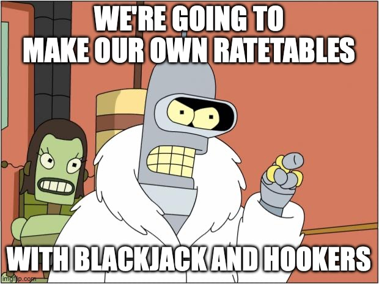
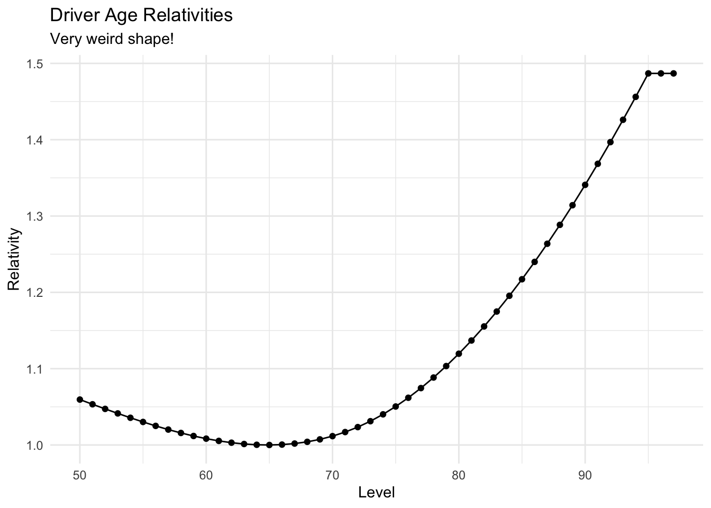
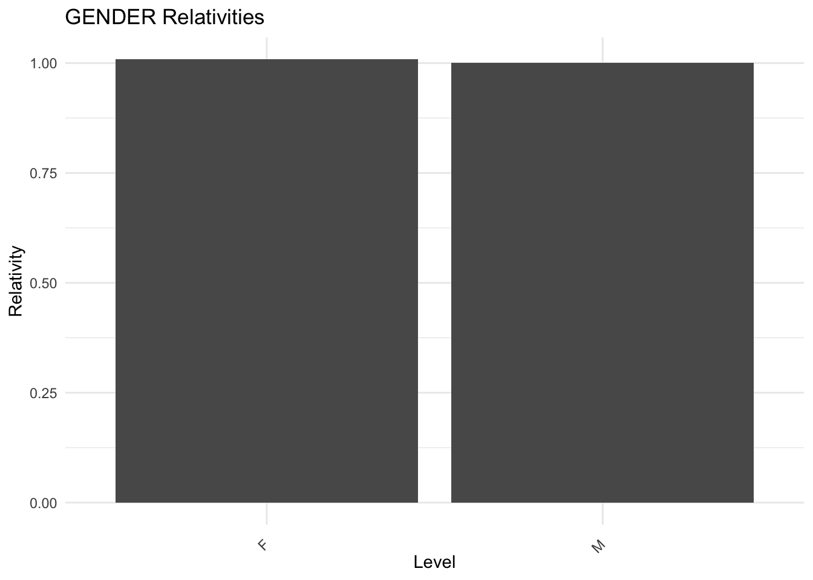
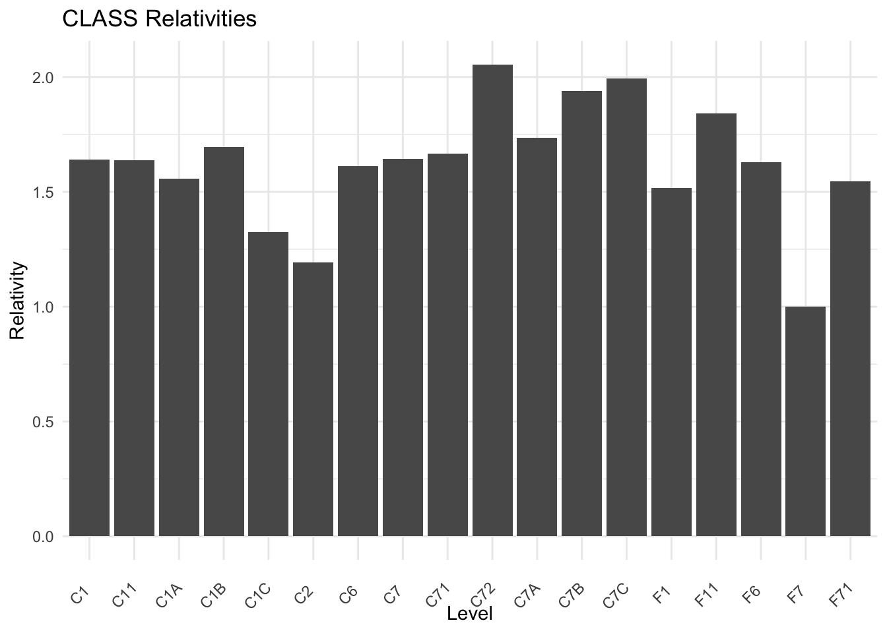
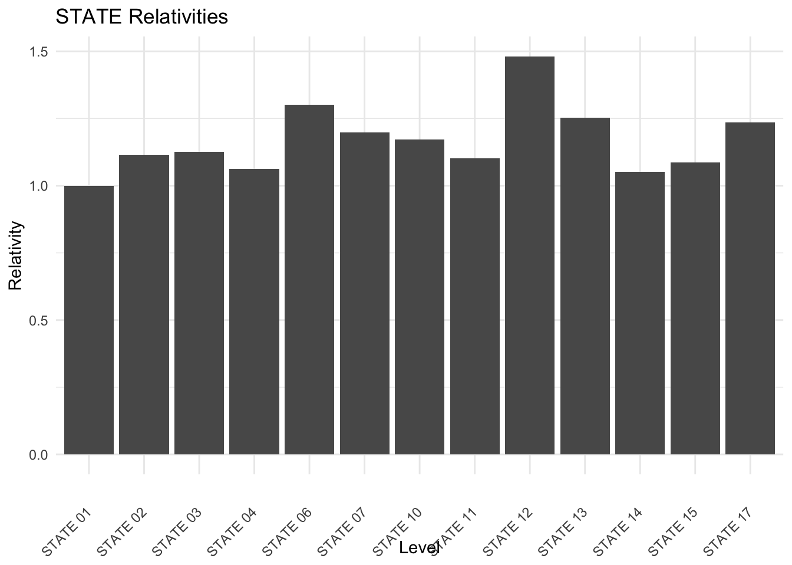
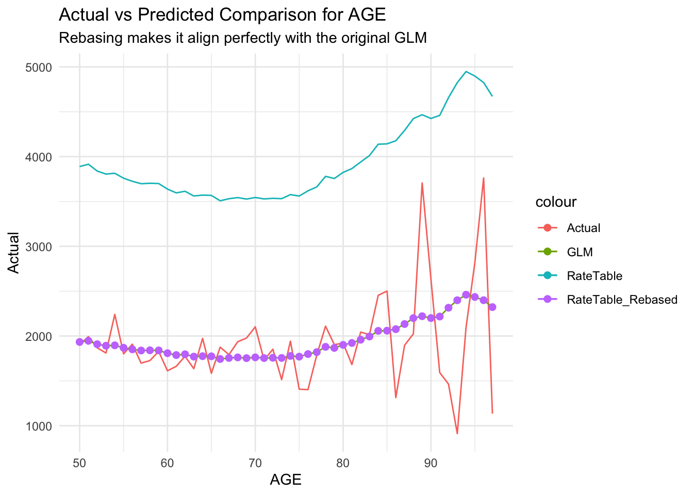
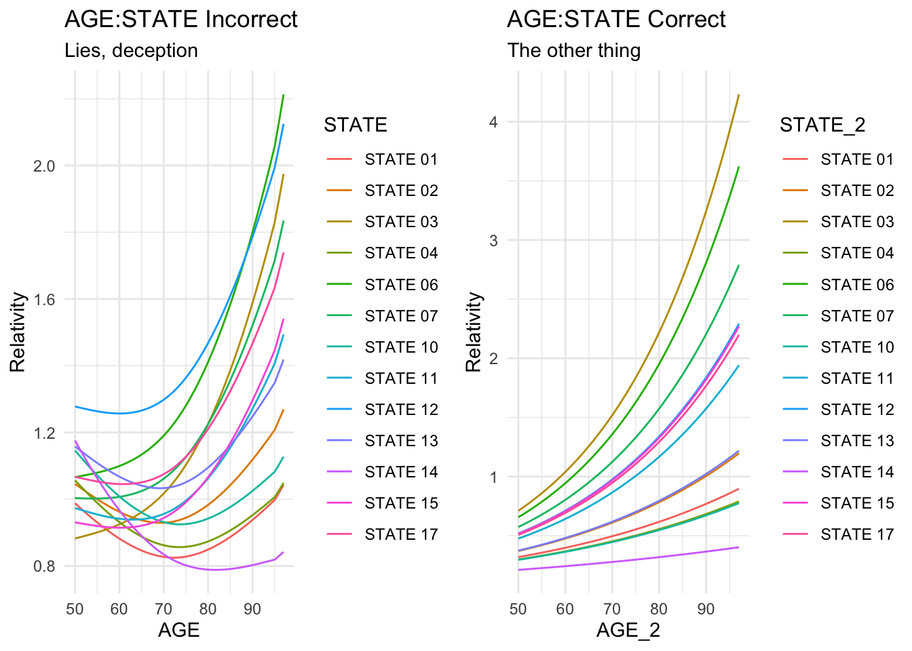

“The motor insurance industry is big. Really big. You just won’t believe how vastly hugely mind-bogglingly big it is. So why is it still using Ratetables for pricing?” - Not Douglas Adams
Fake Douglas Adams is right. Despite the oceans of premium we collect every year and whatever irresponsible bigwigs like to tell investors about insurers’ use of analytics, we still use ratetables to do most of our pricing. Do not be fooled by our teams of data scientists and espresso-machined-open-plan offices, when it comes down to big-money items like premiums you will have to pry ratetables from our cold dead hands.
When an insurance exec says something like “Our innovative AI-powered solution leverages advanced machine learning algorithms to revolutionize the way we [something something insurance]” what he’s saying is “We have a chatbot”. That’s not to say we don’t use machine learning behind the scenes! Despite what insurtechs like to tell VCs about stuffy tradsurers we aren’t actually Luddites who havent evolved beyond dusty scrolls and tea-leaves. But we are exceptionally opinionated and when it comes to tabular modelling, its depressingly difficult to out-perform a well-made ratetable. We know - we’ve tried.
But what IS a ratetable? It barely gets any mention when searched online and despite it being used to transact a gazillion monies of premium per year, there really isn’t much material showing you what they are or how to build one. I think this is shame because the flexibility, transparency and ease of implementation should make them the default way to deploy linear-models.
The tldr version, a ratetable is insurance-speak for a collection of VLOOKUPs. They are basically GLMs converted to tables with lookup values per variable level….And thats about it. Its so embarrassingly simple we are too embarrassed to talk about it. If you’ve ever used VLOOKUP in Excel, congratulations you’ve used a ratetable.
Slightly wordier version, ratetables are GLMs that have been converted to a series of mutliplicative lookup tables with each variable in the model rescaled to some reference level providing users more intuitive understanding of the effect each variable has on the target and the intercept of the model adjusted by an offsetting amount to ensure the predictions still tally up.
Examples
Imagine we have a GLM with the following formula \(y=e^{(0.1x + 0.05)}\) and \(x \in [10, 20]\) how would we represent this as a ratetable? Well lets plug values into the formula
And right here we have a simplest ratetable with one variable and all we had to do was isolate the effect of the sole variable into a lookup table.
Usually ratetables rescale the effect of each variable to be in relation to some reference level i.e. some value we use to say has no effect and we compare other values against this. We like to do this because it makes it more intuitive to discuss the effects of different variables. In our example we would say \(x=10\) increases the response approx. 2.7 times and would give the misleading impression that somehow 10 is very ‘risky’ until you realise that every other value of x results in a higher response, so in effect rather than increasing the risk 2.7, relative to the ‘average’ value that x can take on, x=10 is actually less risky and would reduce the risk versus the average.
Lets make an adjustment. Say we know \(x=13\) is the most common value of \(x\) and choose this as the baseline, so lets divide the effect of variable \(x\) by \(f(x=13):3.857426\) to create the relativity table for x and adjust the intercept by an offsetting amount.
What if we have more than 1 variable? Its exactly the same idea. Lets modify the above formula, \(y=\exp^{(0.1x - 0.05y + 0.05)}\) with \(y= \in [0,5]\) this time choosing \(y=3\) as the reference level for \(y\).
x <-seq(from=10,to=20,by=1)y <-seq(from=0, to=5, by=1)tibble("x"= x,"relativities for x"=exp(x*0.1)/(exp(13*0.1)))
tibble("y"= y,"relativities for y"=exp(y*(-0.05))/(exp(3*(-0.05))))
# A tibble: 6 × 2
y `relativities for y`
<dbl> <dbl>
1 0 1.16
2 1 1.11
3 2 1.05
4 3 1
5 4 0.951
6 5 0.905
As we rescaled both \(x\) and \(y\) we need to adjust the model’s intercept, so in this case the new baseline would be \(e^{13*0.1 + 3*(-0.05) + 0.05}\) in order for the model’s predictions to still give the same predictions.
I wont rant too much about why insurers still use ratetables instead of other tabular-style models or even ‘pure’ GLMS, but my shortlist contenders:
Most off-the-shelf systems are built around deploying table-based models and it is a major IT job to migrate away from them.
The interpretability and transparency provided by ratetables cant be matched.
Ease of deployment. Docker? Pffft, try pen and paper. Want to make your model more complex? Use the other side of the page
‘Tweakability’. Do you want to force a certain behavior from your model? Ratetables make this trivial and you can treat them like Lego blocks. This is essential for when you’re launching a new product and you’re data-poor.
There are a few tools out there that cast the spells to automatically build and export GLMs as ratetables but all these tools are expensive and require talking to sales representatives.
And since my wife is busy getting her hair done and we have about 2 hours to kill in this Starbucks we’re going to make our own ratetables

’Cos I’m a mature professional
Building a ratetable
If you’re a Data Scientist you’d probably call this ‘Individual Conditional Expectations’ (ICE )
If you’re the rubber-ducky on my desk you know this as ’Take a random line of data, duplicate it a bunch of times and change the values of just the variable you care about and see how the predictions changed
Its quite rate that you’ll have a nice and simple GLM of the form I used above with ‘clean’ coefficients. Its much more likely you’ll have splines or polynomials used on some of the numeric variables, so the direct approach of converting the coefficients into tables wont work. Instead this method works for any GLM/GAM provided there aren’t any interactions (the second method works better for this).
We are going to use the insuraceData package, load up the AutoClaims dataset and then build a simple GLM for claim severity. We don’t care that the model itself I just want to focus on the actual ratetabley bits.
library(tidyverse)library(insuranceData)library(data.table)library(mgcv) # fit gamdata(AutoClaims)# fit numeric variables as GAMs to avoid having toclaims_glm <- mgcv::gam(PAID ~s(pmin(AGE,95),k=3, bs="cr") + GENDER + CLASS + STATE,data = AutoClaims,family =Gamma("log"))# model outputsummary(claims_glm)
Now we build a function that can take in the model, the dataset, the variable we want to build the relativity table for and a set of values we want to test it on using the rubber-ducky approach
make_rate_table <-function(model,dataset,variable, variable_values){ dataset <-setDT(dataset) # convert to data.table base_prediction <- dataset[sample(.N, 1)] #sample a single line from the dataset col_nr <-which(names(dataset)==variable) # find the column number for the variable base_prediction$rep <-length(variable_values) #new column that tells us how many lines of data we need to duplicate our sample expd <- splitstackshape::expandRows(base_prediction, "rep") expd[,col_nr] <- variable_values # replace the variable with the values provided# predictions <- predict.glm(model, newdata = expd, type= "response") predictions <- mgcv::predict.gam(model, newdata = expd, type="response")# scale the predictions relative to the lowest value so we get relativitiesreturn(data.frame(Level = variable_values,Relativity = predictions/min(predictions)))}
We can apply this function to create the rate table for the Driver Age variable
# create the table of relativitiesage_relativities <-make_rate_table(claims_glm,dataset = AutoClaims,variable ="AGE",variable_values =sort(unique(AutoClaims$AGE)))# lets look at the tableknitr::kable(age_relativities[1:10,])
Level
Relativity
50
1.059501
51
1.053348
52
1.047287
53
1.041370
54
1.035650
55
1.030180
56
1.025009
57
1.020187
58
1.015762
59
1.011785
# plot theseggplot(age_relativities,aes(x=Level,y=Relativity))+geom_line()+geom_point()+ggtitle("Driver Age Relativities",subtitle ="Very weird shape!")+theme_minimal()

We’ve created our first table for the driver age. We now need to do this for all the other variables using the same idea.
theme_set(theme_minimal())# List of variablesvariables =c("GENDER", "CLASS", "STATE")# Initialize an empty list to store the relativity tablesrelativities =list()# Loop to create relativity tablesfor (var in variables) { relativities[[var]] <-make_rate_table(claims_glm,dataset = AutoClaims,variable = var,variable_values =sort(unique(AutoClaims[[var]])))}# Initialize an empty list for plotsplots =list()# Loop to create ggplot objects for each relativityfor (var innames(relativities)) { plots[[var]] <-ggplot(relativities[[var]], aes(x=Level, y=Relativity)) +geom_col() +theme(axis.text.x =element_text(angle =45, vjust =0.5, hjust=1)) +ggtitle(paste(var, "Relativities"))}# Loop to display plotsfor (plot_name innames(plots)) {print(plots[[plot_name]])}



# Plotting (example for one plot, you can loop or selectively plot as needed)
Rebasing
Ok now you’ll see the first downside to this approach is we need to adjust the intercept of the model to make the predictions tally up to the original GLM. To make predictions with this model we will left-join the original dataset to the relativities and calculate the new intercept required to make the predictions line up.
# we need to join the main dataset to the relativity tablesTally <- AutoClaims |>left_join(relativities[['GENDER']] |>select(Level, Relativity_1 = Relativity),by =c("GENDER"="Level")) |>left_join(relativities[['CLASS']] |>select(Level, Relativity_2 = Relativity),by =c("CLASS"="Level")) |>left_join(relativities[['STATE']] |>select(Level, Relativity_3 = Relativity),by =c("STATE"="Level")) |>left_join(age_relativities |>select(Level, Relativity_4 = Relativity),by =c("AGE"="Level")) |>mutate(AllRelativities = matrixStats::rowProds(as.matrix(across(matches("Relativity_[0-9]") )))) |>mutate(BaseRate =mean(AutoClaims$PAID)) |># set the baserate = avg claim size as starting pointmutate(RateTablePredictions = AllRelativities * BaseRate) |>mutate(GLM_Prediction =predict(claims_glm, AutoClaims, type ="response"))head(Tally)
STATE CLASS GENDER AGE PAID Relativity_1 Relativity_2 Relativity_3
1: STATE 14 C6 M 97 1134.44 1.000000 1.611293 1.052143
2: STATE 15 C6 M 96 3761.24 1.000000 1.611293 1.086996
3: STATE 15 C11 M 95 7842.31 1.000000 1.638471 1.086996
4: STATE 15 F6 F 95 2384.67 1.008118 1.630104 1.086996
5: STATE 15 F6 M 95 650.00 1.000000 1.630104 1.086996
6: STATE 15 F6 M 95 391.12 1.000000 1.630104 1.086996
Relativity_4 AllRelativities BaseRate RateTablePredictions GLM_Prediction
1: 1.48686 2.520691 1853.035 4670.927 2322.296
2: 1.48686 2.604190 1853.035 4825.654 2399.223
3: 1.48686 2.648116 1853.035 4907.050 2439.691
4: 1.48686 2.655980 1853.035 4921.622 2446.937
5: 1.48686 2.634592 1853.035 4881.990 2427.232
6: 1.48686 2.634592 1853.035 4881.990 2427.232
Thankfully its quite easy to this as all we need to do is adjust the intercept/baserate of the model such that it still gives the same average response as the original GLM. Lets show what this looks like when plotting the actual vs expected values for the AGE variable.
# lets plot the predictions against the GLM versus the AGE variable Tally |>group_by(AGE) |>summarise(Actual =mean(PAID),GLM =mean(GLM_Prediction),RateTable =mean(RateTablePredictions),RateTable_Rebased =mean(RateTablePredictions*(mean(Tally$GLM)/(mean(Tally$RateTablePredictions))))) |>ggplot()+geom_line(aes(x=AGE,y=Actual,group=1,colour="Actual"))+geom_line(aes(x=AGE,y=GLM,group=1,colour="GLM"))+geom_line(aes(x=AGE,y=RateTable,group=1,colour="RateTable"))+geom_point(aes(x=AGE,y=RateTable_Rebased,group=1,colour="RateTable_Rebased"),size=2)+ggtitle("Actual vs Predicted Comparison for AGE", subtitle ="Rebasing makes it align perfectly with the original GLM")

As you can see the predictions from the ratetables line up exactly with the original model once we rebase the predictions. However while rebasing is not difficult it is tedious, especially when you have dozens of variables to work through.
Interactions
The second thing to be aware of with this approach is it can give misleading relativities when you’re trying to isolate the effect of interactions. This is because ICE will vary all aspects of the model that contain the variable of interest including theinteractions, so for example say we had AGE interacted with STATE, when varying the AGE variable to create its ratetable, we will also be picking up the effect of AGE:STATE. This is a pain to work reverse out and my suggestion when using ICE is to make duplicates for all variables you want to interact in order to isolate their effects.
Again this is best shown with an example. Lets interact AGE and STATE and illustrate the differences in relativities caused by interactions when blindly applying the ICE approach:
library(cowplot)# new model interacting AGE & CLASSclaims_glm_interactions <- mgcv::gam(PAID ~s(pmin(AGE,95),k=3, bs="cr") + CLASS + STATE + GENDER + AGE:STATE,data = AutoClaims,family =Gamma("log"))# duplicate AGE and CLASS and build new GLM off the duplicated columnsAutoClaims$AGE_2 <- AutoClaims$AGEAutoClaims$STATE_2 <- AutoClaims$STATEclaims_glm_interactions2 <- mgcv::gam(PAID ~s(pmin(AGE,95),k=3, bs="cr") + CLASS + STATE + GENDER + AGE_2:STATE_2,data = AutoClaims,family =Gamma("log"))# ICE function for two variablesmake_rate_table_2var <-function(model, dataset, variable1, variable2, variable1_values, variable2_values ){ dataset <-setDT(dataset) # convert to data.table base_prediction <- dataset[sample(.N, 1)] #sample a single line from the dataset baseline <-as.numeric(mgcv::predict.gam(model, newdata = base_prediction, type="response")) col_nr1 <-which(names(dataset)==variable1) # find the column number for the 1st variable col_nr2 <-which(names(dataset)==variable2) # find the column number for the 2nd variable# create every unique combination of the var1 and var2 uniq_comb <-expand.grid(variable1_values,variable2_values)colnames(uniq_comb) <-c(variable1,variable2) base_prediction$rep <-nrow(uniq_comb) #new column that tells us how many lines of data we need to duplicate our sample expd <- splitstackshape::expandRows(base_prediction, "rep") expd[,col_nr1] <- uniq_comb[,1] # replace the variable with the values provided expd[,col_nr2] <- uniq_comb[,2] # replace the variable with the values provided# predictions <- predict.glm(model, newdata = expd, type= "response") predictions <- mgcv::predict.gam(model, newdata = expd, type="response") expd <-data.frame(expd) final_frame =data.frame(expd[,col_nr1], expd[,col_nr2],Relativity = predictions/(baseline))colnames(final_frame) <-c(variable1,variable2,"Relativity")# scale the predictions relative to the lowest value so we get relativitiesreturn(final_frame)}p1 <-make_rate_table_2var(claims_glm_interactions, AutoClaims,"AGE","STATE", variable1_values =sort(unique(AutoClaims$AGE)),variable2_values =sort(unique(AutoClaims$STATE)) ) %>%ggplot(aes(x=AGE,y=Relativity,group=STATE, colour=STATE))+geom_line()+ggtitle("AGE:STATE Incorrect", subtitle ="Lies, deception")p2 <-make_rate_table_2var(claims_glm_interactions2, AutoClaims,"AGE_2","STATE_2", variable1_values =sort(unique(AutoClaims$AGE_2)),variable2_values =sort(unique(AutoClaims$STATE_2)) ) %>%ggplot(aes(x=AGE_2,y=Relativity,group=STATE_2, colour=STATE_2))+geom_line()+ggtitle("AGE:STATE Correct", subtitle ="The other thing")plot_grid(p1, p2)

As you can see above, the two graphs show totally different relativities for what should be the same thing, however this is simply because in the first approach we are picking up the effect of the interactions and the individual effects of AGE and STATE. The second graph is the true interaction effect and is what would be used in your ratetable.
There is another method I use to build ratetables to try and get around the rebasing and interaction issues which I will write about in future. This second method is a lot more ‘fiddly’ and needs adjusting to different modelling packages but does involve the use of the word matrix which immediately gives us extra LinkedIn-points.